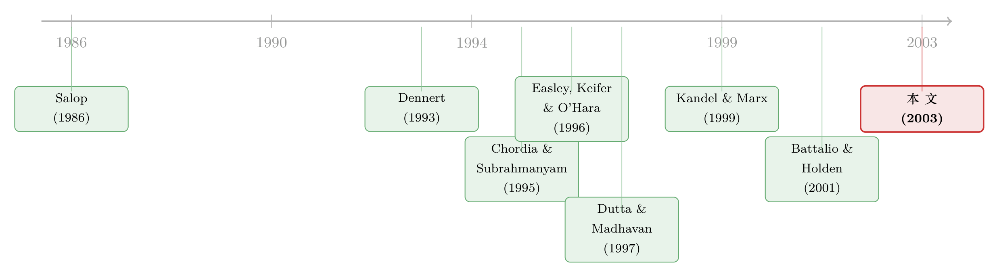

为你的订单付钱，结果你却付了更多
本文读的是 Parlour & Rajan (2003, Journal of Financial Economics)：当做市商为了买你的散户订单流而向券商付钱（payment for order flow），表面上看是「羊毛出在羊身上、最后会通过更低的佣金还给你」，但作者用一个无穷期博弈证明——只要这笔钱是正的，市场就再也回不到「做市商零利润」的均衡；价差被撑得更宽，宽到不仅吃掉了返还的佣金，还把财富从下市价单的人（流动性需求方）转移给了下限价单的人（流动性供给方）。消费者福利和社会福利都下降了。
1 一个看上去人畜无害的「回扣」
先从一个让监管者头疼了二十年的现象说起。
零售订单流是一种商品。它会被做市商买走——有时是直接给券商现金，有时是给软件、给数据、给一个好用的下单界面。在美国股票市场，这种交易已经是二十年的惯例；2001 年多重挂牌爆发之后，它又蔓延到了期权市场。论文里给了一个具体的量级：Knight Securities 每天大约成交 6.5 亿股，按每股 0.2 美分算，单是这一家做市商，每天就要为 Nasdaq 证券的订单流付出约 130 万美元。这不是小数目。
那么，问题来了：这笔钱，到底动了谁的奶酪？
一个非常自然、也非常流行的直觉是这样的：消费者只关心交易的总成本——他承受的价差，加上他付给券商的佣金。如果「为订单流付费」只是做市商和券商之间的一笔转移支付，那么在竞争惨烈的零售券商市场里，这笔钱迟早会以更低的佣金或更好的服务回流到消费者手里（Battalio et al., 2001 确实找到了佣金下降的一些证据）。如果是这样，那它就是一笔无害的「侧支付」，监管大可不必操心。
这篇论文要做的，就是把这个「人畜无害」的直觉，放到一个严肃的均衡模型里去拷问。结论是：直觉错了，而且错得相当根本。
2 模型的舞台：三类人，一个无穷期的博弈
要理解作者凭什么敢说直觉错了，得先看清楚他们搭的这个舞台。这是一个无穷期 (infinite-horizon) 模型，里面有三类参与者：
- 做市商 (market makers)，共 \(M\ge 2\) 个，靠报出价差 \(s\) 来供给流动性；
- 券商 (brokers)，共 \(B\ge 2\) 个，是投资者和做市商之间的中介，对市价单收佣金 \(c^m\)、对限价单收佣金 \(c^l\)，并选择一个订单路由策略 (order routing strategy) \(r_b\)——即把订单送到第 \(m\) 个做市商的概率；
- 投资者 (investors)，每期来一个，决定下市价单、限价单，还是干脆不下单。
每一期的时序是固定的：做市商先报价差，券商再报佣金和路由，最后投资者到场下单。
这里有几个设定是全文的关键，值得停下来咂摸：
第一，作者刻意把「信息」这件事拿掉了。 以往大量文献把订单流付费理解成一种「撇奶油 (cream-skimming)」的工具——做市商花钱买的是散户的、不知情的订单流，因为这部分订单不会让他在信息上吃亏（Easley, Keifer & O'Hara, 1996；Battalio, 1997）。但本文反其道而行：它假设标的资产价值对所有人都是已知的，根本没有知情交易。这样做的好处是，一旦得到「价差变宽」的结论，你就没法把它甩锅给信息成本——它纯粹是竞争结构的产物。
第二，限价单被显式地搬上了台面。 一个投资者下限价单，本质上是在供给流动性，他在和做市商抢生意。限价单在簿上停留一期：下一期若有匹配的市价单进来，就成交；否则就撤掉。于是「订单簿」只有两种状态——有一张上期遗留的限价单（状态 1），或者空簿（状态 0）。
第三，也是最妙的一点：做市商收到市价单的概率，与订单簿的状态无关。 直觉上，这相当于假设券商（比如 E*TRADE）没法、也不会去盯着某一个做市商的簿上还挂着哪些未成交的限价单——这种监控成本太高了。这个看似技术性的假设，后面会变成整个反转的引信。
投资者怎么决策？每个投资者对交易有一个私人估值 \(b\)，从一个连续分布 \(F(\cdot)\) 中抽取，支撑集为 \([\underline{b},\bar{b}]\)，且 \(\underline{b}<0<\bar{b}\)。\(b\) 可以理解成「离最优组合有多远」：\(b\) 越大，这笔交易越能把他带向最优。一笔成交的净收益是 \(b\) 减去交易成本。而两种订单的交易成本是不一样的：
$$T^d(s,c^m) = c^m + \frac{s}{2}, \qquad T^s(s,c^l) = c^l - \frac{s}{2}.$$
市价单提交者（liquidity demander）要付半个价差 \(s/2\)——他在价差的「错误一侧」成交；限价单提交者（liquidity supplier）则赚半个价差，所以他的成本里是 \(-s/2\)。这个符号的差别，是全文的命门：价差一旦变宽，市价单的人更疼，限价单的人更爽。
3 投资者怎么选：一道在「市价」与「限价」之间的临界值
接下来是投资者的最优下单策略，作者把它收敛成一个临界值 \(b^*\)。
市价单立刻成交，净收益是 \(b-T^d\)。限价单未必成交：设 \(p_t\) 为在 \(t\) 期下的限价单在 \(t+1\) 期成交的概率，则它的事前期望收益是 \(\delta p_t (b-T^s)\)（\(\delta\) 是共同贴现因子）。令一个投资者恰好对两者无差异的那个 \(b\) 为 \(b^*\)，它满足下面这个隐式方程：
直觉很顺：\(b\) 很高的人「等不起」，他急着成交，宁可付价差下市价单；\(b\) 中等的人不那么急，愿意挂个限价单去赚价差、赌一个成交概率；\(b\) 太低（甚至为负）的人干脆不交易。于是 Lemma 1 给出一个干净的分层——当 \(T^d>T^s\) 时，\(b\in[T^s,b^*)\) 的人下限价单，\(b\in[b^*,\bar{b}]\) 的人下市价单。
由此还能写出三个概率：市价单到达概率 \(\mu=1-F(b^*)\)，限价单概率 \(\lambda=F(b^*)-F(T^s)\)，无订单概率 \(F(T^s)\)。Lemma 2 顺手给了一组关键的比较静态：价差 \(s\) 一升，\(\mu\) 下降、\(\lambda\) 上升——市价单变少，限价单变多。记住这条，它是后面福利分析的支点。
4 没有订单流付费时：一个干净的零利润均衡
现在先看「没有订单流付费」的世界（\(\gamma_b=0\)）。
这是一个重复博弈，理论上能撑起一大堆均衡——folk 定理告诉我们，只要贴现因子够大，任何高于 minmax 的支付都能用「触发—惩罚」来维持（这条思路可上溯到 Abreu, 1988）。作者用的惩罚也很直白：谁敢偏离均衡价格，此后所有同类（所有做市商、或所有券商）就永远打到零利润——也就是进入一段「惨烈竞争」期。
在对称、平稳均衡里，作者递归地写出了各方的价值函数。对券商（Lemma 3）：
$$H(0)=\frac{\mu}{1-\delta}\left[\frac{c^m}{B}+\frac{\delta c^l(\lambda/B)}{2M}\right],\qquad H(1)=\frac{\mu}{1-\delta}\left[\frac{c^m}{B}+\frac{c^l\big(1-\delta(1-(\lambda/B))\big)}{2M}\right].$$
对做市商（Lemma 4）：
$$J(0)=\frac{\mu s\,(2-\delta(\lambda/M))}{4M(1-\delta)},\qquad J(1)=\frac{\mu s\,(1+\delta(1-(\lambda/M)))}{4M(1-\delta)}.$$
这两组函数里藏着两个值得说的细节。其一，\(H(0)\le H(1)\)：手里有一张待成交限价单的券商，处境更好——因为这张单这期有概率成交、给他挣到限价佣金。其二，\(J(0)\ge J(1)\)：手里有限价单的做市商反而更差——因为簿上那张限价单是个竞争对手，按价格优先它会先吃掉进来的市价单，把本该属于做市商的生意抢走。
把这两点放在一起，故事就立起来了：限价单对券商是资产，对做市商是负债。 在没有订单流付费时，这套账依然能凑出一个做市商零利润的均衡——价差只够覆盖成本，消费者面对的是一个零交易成本的世界。一切都还算太平。
5 反转：当做市商开始为「每一张」市价单付钱
真正关键的一步，是引入订单流付费 \(\gamma>0\)：做市商为它收到的每一张市价单向券商支付 \(\gamma\)。
注意「每一张」这三个字。这正是第 2 节那个「券商盯不住簿」的假设开始发威的地方。回想一下：做市商有时簿上挂着一张上期遗留的限价单。当一张市价单进来、而簿非空时，按照价格优先，这张市价单会和限价单成交，而不是和做市商成交。换句话说，做市商从这笔交易里一分钱没赚，却仍然要为这张市价单付出 \(\gamma\)。
而问题在于，簿是空还是非空，是做市商自己内部管理的状态，外部不可观测、因而不可写进合约。所以做市商没法说「只为那些真正和我成交的市价单付钱」——他必须为所有市价单付钱，包括那些他毫无所得、纯粹倒贴的。
于是逻辑链条闭合了：做市商既然在某些状态下要白白倒贴 \(\gamma\)，他的价差就必须宽到足以覆盖这部分预期损失。 用论文的话说：
在订单流付费下，做市商为所有市价单付钱，包括那些他得不到任何好处的。因此价差必须宽到能覆盖他在这类交易上亏掉的钱。
这就导出了本文的核心命题——只要 \(\gamma>0\)，就不存在做市商零利润的均衡，也不存在市价单提交者的零交易成本均衡。佣金 \(c^m\) 确实可能降下来（这一点和那个流行直觉吻合），但价差 \(s\) 撑大的幅度超过了佣金下降的幅度，所以市价单的人面对的总成本 \(T^d=c^m+s/2\) 反而上升。
而宽价差对另一群人是好消息。回到第 3 节那个符号差别：限价单的成本 \(T^s=c^l-s/2\)，价差越宽，限价单越赚。于是订单流付费的净效果，是一台财富再分配机器：它把好处从下市价单的人（流动性需求方）转移到下限价单的人（流动性供给方）。
这里还有一个博弈论意义上漂亮的收尾：给定别的做市商都在为订单流付费，单个做市商的最优反应就是跟着付。 所以订单流付费在这个模型里，干脆就是一个反竞争装置 (anticompetitive device)——它把整个系统从零利润均衡里硬生生顶了出来。
这里要和「最优执行 (best execution)」与「价格匹配 (price-matching)」区分开。订单流付费合约里通常附带一条：做市商保证给券商的价格不差于当前最优买卖价（NBBO），这其实是一份价格匹配协议。而众所周知，价格匹配本身就能瓦解 Bertrand 竞争（这个直觉源自 Salop, 1986）。为了把两件事分开，作者分别分析了有无 NBBO 要求的情形，发现结论在定性上一致——也就是说，价差变宽不是价格匹配带来的，订单流付费自己就够了。
6 福利：被补贴出来的「过多限价单」
最后是福利账。
作者比较了「无付费的零交易成本均衡」与「有正付费、且券商零利润的均衡」。结论是后者的消费者福利和社会福利都更低。机制有两层：
其一，在订单流付费的均衡里，限价单被补贴了，于是出现了过多的限价单（相对社会最优而言）。其二——也是更微妙的一层——一些本来下市价单会更好的投资者，被价差顶到了去下限价单。回想 Lemma 2：价差一升，临界值 \(b^*\) 移动，\(\mu\) 降、\(\lambda\) 升。这些被「劝退」成限价单的人，承担了执行的不确定性（限价单未必成交），整体的交易效率因此受损。
所以这篇论文给出的画面是：订单流付费不是把蛋糕重新切给消费者，而是把一部分蛋糕从一群投资者手里挪到另一群投资者手里，而且在挪动的过程中，蛋糕本身还变小了。
7 文献脉络
把这篇论文放回它所在的脉络里看，会更清楚它的位置。
早期关于订单流付费的工作，比如 Chordia & Subrahmanyam (1995) 和 Kandel & Marx (1999)，把这个现象归因于价格的离散性——他们认为订单流付费是 tick size 不为零的产物，等 tick 缩到零、价格连续化之后，它就该消失。但 Battalio & Holden (2001) 指出，在一个连续价格的模型里，订单流付费照样能活下来——事实上它确实挺过了「小数化 (decimalization)」。本文也站在这一边：在零 tick 的设定下，订单流付费依然存在。
另一条线是「撇奶油」叙事：Easley, Keifer & O'Hara (1996)、Battalio (1997) 等用信息不对称解释为什么订单流值得买。本文的贡献恰恰是把信息关掉，证明即便没有撇奶油的动机，订单流付费也会内生出宽价差——这是一个全新的、纯竞争结构层面的理由。这也正是它与 Battalio & Holden (2001) 的分野：在后者里，付费均衡等价于不付费的竞争均衡（做市商仍是零利润）；而在本文里，付费摧毁了零利润均衡。

还有一条关于「做市商竞争」的脉络：Dennert (1993)、Dutta & Madhavan (1997) 都研究了交易商市场的竞争与合谋。本文与 Dutta & Madhavan (1997) 最近——同样是无穷期博弈——但关键的差异在于，本文显式地把券商市场的竞争也建模进来了：券商为争夺客户而竞争，因而会最优地路由订单。正因为有了券商这一层，作者才能谈论消费者实际支付的总交易成本，而不只是做市商之间的价差。这一点也让本文成为 Kandel & Marx (1999) 的补充——后者关心的是订单流付费如何影响某只股票里做市商的数量，而本文关心的是券商与做市商之间的互动。
至于实验证据：Bloomfield & O'Hara (1997) 在实验室里发现，订单流被「优先处理 (preferenced)」得越多，价差越宽——这与本文的核心结论高度一致。本文进一步说清楚了，这些租金（rents）有一部分会被券商通过佣金返还给消费者，但不是全部。
（关于散户订单流今天最终落到哪里、执行质量如何，可参见《集中，到底是谁的福利？——一张散户订单的旅行账单》；关于限价订单簿本身如何被理解成一座流动性的集市，可参见《买卖价差为什么会自己长回去？》。）
8 评论与延伸（Q&A + 研究方向）
(a) 几个可能的疑问
Q：这篇论文说价差会变宽、消费者更糟，可现实里散户的佣金确实一路降到了零，这不矛盾吗？
不矛盾，这恰恰是论文最想纠正的误读。模型里佣金 \(c^m\) 确实可以降，作者从不否认；它说的是价差 \(s\) 撑大的幅度超过了佣金下降的幅度，所以总成本 \(T^d=c^m+s/2\) 反而上升。佣金归零是「看得见」的那一半，价差变宽是「看不见」的那一半——只盯着佣金，正是那个流行直觉栽跟头的地方。
Q：为什么「做市商收单概率与簿状态无关」这个假设这么要命？
因为它制造了「不可契约性」。如果券商能盯住每个做市商的簿、只为真正和做市商成交的市价单付钱，那做市商就不必为「白白倒贴」的那部分定价，宽价差的逻辑就垮了。正是「盯不住簿」让做市商必须为每一张市价单付费，包括那些被簿上限价单截胡的，他才不得不靠宽价差来摊平这笔系统性的损失。
Q：这和「撇奶油」假说到底差在哪？
撇奶油假说靠的是信息不对称——订单流付费是用来分离出不知情订单的工具。本文把知情交易整个拿掉了，标的价值人人皆知。所以它的宽价差不可能来自信息成本，只能来自竞争结构本身。这是一个独立于信息的、全新的机制，也让结论更干净：你没法用「这是为了补偿逆向选择」来为它辩护。
Q：限价单提交者「受益」，那订单流付费岂不是对一部分投资者是好事？为什么还说社会福利下降？
对，限价单的人（流动性供给方）确实因为价差变宽而受益，这正是「再分配」的含义。但社会福利看的是总和：一方面限价单被补贴导致过多限价单，另一方面一些本该下市价单的人被价差挤去下了限价单、承担了不必要的执行不确定性。再分配本身不创造价值，而扭曲过的订单结构带来了净损失。
Q：结论依赖那套「永远零利润」的无限惩罚吗？换个惩罚会不会就翻盘？
无限惩罚是用来把均衡价格撑到最高的工具，它服务于刻画「能维持多高的订单流付费」这个上界。但「\(\gamma>0\) 就不存在做市商零利润均衡」这个核心命题，根子在于做市商为不可观测状态下的市价单倒贴 \(\gamma\)——这是支付结构问题，不是惩罚结构问题。所以核心结论并不脆弱地依赖某一种特定的触发策略。
Q：作者为什么只看对称均衡？现实里做市商给不同券商的返点明明不一样。
作者自己承认了这一点（并引了 Battalio & Holden, 2001 和 Battalio et al., 2001 关于差异化返点的证据），只是为了解析上的可处理性才聚焦对称均衡。他们明说非对称均衡的结果集合「显然更大」。这意味着本文的福利结论更像是一个保守的、干净的基准，而不是对现实返点结构的完整刻画。
(b) 几个可能的研究问题与提案
1. 把这套逻辑搬到公司债市场的「成交即返佣」上。
【经济故事】公司债是 OTC 市场，交易商网络分层（core-periphery），散户/小机构的订单常被路由给特定交易商，存在类似订单流付费的安排。本文的机制——为不可观测状态下的订单倒贴、从而撑宽价差——在债券市场可能更强，因为债券簿更不透明、状态更难观测。 【可行性】中。TRACE 数据能看到成交价和交易商身份，但「付费」本身几乎不可观测，需要从价差结构反推，识别上偏弱；可考虑用某次监管披露规则的变化做事件研究。
2. 用「执行质量披露规则」（Rule 11Ac1-6 / 605-606）做一次自然实验。
【经济故事】2001 年的披露规则让订单流付费表（schedule）上网可查。本文预测：付费越高，价差越宽、总成本越高。披露本身改变了券商的路由激励，可以检验「曝光」是否压缩了价差。 【可行性】高。605/606 报告是公开面板数据，券商×做市商×时间维度齐全，可做 DiD。关键是找到一个干净的、外生改变披露强度或付费水平的冲击。
3. 把外资/跨境零售订单流加进来。
【经济故事】不同辖区对订单流付费的监管天差地别（欧盟 2026 年起逐步禁止，美国允许）。如果同一只跨境上市股票在两套规则下交易，本文的再分配机制预测两边的价差结构应系统性不同。 【可行性】中。需要匹配跨境上市股票的双边微观结构数据，识别来自监管差异；难点是控制掉两地流动性、税制、时区等混杂因素。
4. 限价单补贴与「过多限价单」的直接检验。
【经济故事】本文的福利损失有一个可证伪的预言：订单流付费越普遍，限价单相对市价单的比例越高（因为限价单被补贴、且市价单的人被价差挤过来）。 【可行性】高。限价单/市价单比例可从订单簿数据直接构造，付费强度可从 606 报告取，做横截面或面板回归即可。这是本文最 doable 的一个直接检验。
5. 当券商市场不是完全竞争时，租金怎么分？
【经济故事】本文假设券商竞争激烈、零利润，所以部分租金返还给消费者。但若零售券商市场高度集中（现实里 PFOF 收入高度集中于少数券商），租金返还会更少、消费者更糟。把券商市场结构内生化，能刻画「集中度→返还比例→消费者福利」的链条。 【可行性】中。理论上是本文模型的自然扩展（放松 \(B\) 的零利润假设）；实证上需要券商集中度与执行成本的匹配数据，识别偏理论驱动。
9 我的判断
这篇论文的贡献，在我看来不在于「发现了订单流付费让价差变宽」——Bloomfield & O'Hara (1997) 在实验室里已经看到了这个相关性。它真正的贡献是给出了一个剥离了信息的、纯竞争结构的微观机制：做市商必须为不可观测状态下、自己毫无所得的那部分市价单倒贴，因而价差被系统性地撑宽，零利润均衡被摧毁。这个「不可契约的簿状态」是整篇文章的引信，设计得很巧，也很可信。把它从「撇奶油」叙事里独立出来，是一个干净的理论增量。
对识别（这里是「对模型稳健性」）的担忧主要有三点。其一，「券商盯不住做市商的簿」是一个极强的假设——在今天高度电子化、数据密集的市场里，这个假设是否还成立，直接决定了核心机制是否还在。其二，对称均衡是为了可处理性做的妥协，作者自己也承认非对称（差异化返点）的现实更复杂，福利结论在非对称世界里能撑多远，并不清楚。其三，模型里限价单只活一期、价值已知、无知情交易——这些都是为了把机制照亮而做的简化，但也意味着它离真实的订单簿动态和逆向选择还有距离。
我接下来最想看到的，是把这套理论拿去和「执行质量披露」时代的真实数据对账：限价单/市价单比例是否真的随订单流付费强度上升？总交易成本（而非佣金）是否真的没降反升？以及——在 2026 年欧盟逐步禁止 PFOF、美国仍允许的当下——一次干净的跨辖区比较，或许正是检验这个二十年前的理论的最佳时机。
参考文献
- Abreu, D. (1988). Towards a theory of discounted repeated games. Econometrica 56, 383–396.
- Battalio, R. (1997). Third market broker-dealers: cost competitors or cream skimmers? Journal of Finance 52, 341–352.
- Battalio, R., Holden, C. (2001). A simple model of payment for order flow, internalization and total trading cost. Journal of Financial Markets 4, 33–71.
- Battalio, R., Jennings, R., Selway, R. (2001). Payment for order flow, trading costs and dealer revenue for market orders at Knight Securities L.P. Journal of Financial Services Research 19, 39–56.
- Bloomfield, R., O'Hara, M. (1997). Does order preferencing matter? Journal of Financial Economics 50, 3–37.
- Chordia, T., Subrahmanyam, A. (1995). Market making, the tick size, and payment-for-order flow: theory and evidence. Journal of Business 68(4), 544–575.
- Dennert, J. (1993). Price competition between market makers. Review of Economic Studies 60, 735–751.
- Dutta, P., Madhavan, A. (1997). Competition and collusion in dealer markets. Journal of Finance 52, 245–276.
- Easley, D., Keifer, N., O'Hara, M. (1996). Cream skimming or profit sharing? The curious role of purchased order flow. Journal of Finance 51, 811–834.
- Kandel, E., Marx, L. (1999). Payments for order flow on NASDAQ. Journal of Finance 49, 35–66.
- Parlour, C. A., Rajan, U. (2003). Payment for order flow. Journal of Financial Economics 68(3), 379–411.
- Salop, S. (1986). Practices that (credibly) facilitate oligopoly coordination. In New Developments in the Analysis of Market Structure. MIT Press, Cambridge, MA, pp. 265–290.